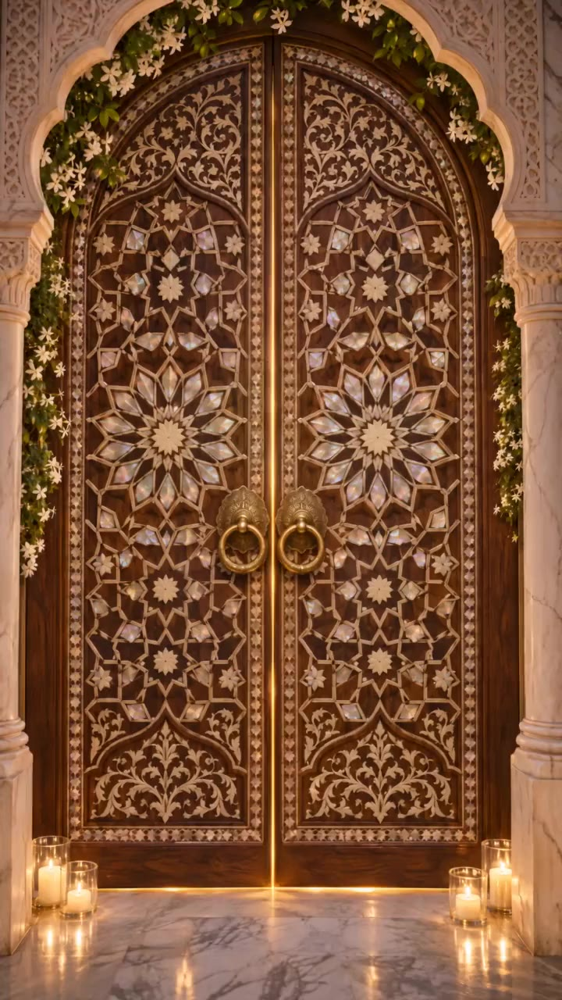

Private preview · معاينة خاصة
طلب الدخول
This invitation is still being prepared. Enter the access code you were given.
الدعوة قيد التجهيز. أدخل رمز الدخول الذي وصلك.
Opening the garden
·
Please enable JavaScript to open this invitation.